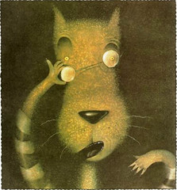

 REGRESAR A PAGINA PRICIPAL.
«El bosque era mi hogar.
Yo vivía allí y me gustaba mucho. Siempre trataba de mantenerlo ordenado y limpio.
Un día soleado, mientras estaba recogiendo las basuras dejadas por unos turistas sentí unos pasos.
Me escondí detrás de un árbol y vi llegar a una niña vestida de una forma muy divertida: toda de rojo y su cabeza cubierta, como si no quisieran que la viesen.
Caminaba feliz y comenzó a cortar las flores de nuestro bosque, sin pedir permiso a nadie, quizás ni se le ocurrió que estas flores no le pertenecían.
Naturalmente, me puse a investigar. Le pregunté quién era, de dónde venía, a dónde iba, a lo que ella me contestó, cantando y bailando, que iba a casa de su abuelita con una canasta para el almuerzo.
Me pareció una persona honesta, pero estaba en mi bosque cortando flores. De repente, sin ningún remordimiento, mató a un mosquito que volaba libremente, pues el bosque también era para él.
Así que decidí darle una lección y enseñarle lo serio que es meterse en el bosque sin anunciarse antes y comenzar a maltratar a sus habitantes.
La dejé seguir su camino y corrí a la casa de la abuelita. Cuando llegué me abrió la puerta una simpática viejecita. Le expliqué la situación y ella estuvo de acuerdo en que su nieta merecía una lección.
La abuelita aceptó permanecer fuera de la vista. Cuando llegó la niña la invité a entrar al dormitorio donde yo estaba acostado vestido con la ropa de la abuelita.
La niña llegó sonrojada, y me dijo algo desagradable acerca de mis grandes orejas. He sido insultado antes, así que traté de ser amable y le dije que mis grandes orejas eran para oírla mejor.
Ahora bien, la niña me agradaba y traté de prestarle atención, pero ella hizo otra observación insultante acerca de mis ojos saltones.
Comprenderán que empecé a sentirme enojado.
La niña mostraba una apariencia tierna y agradable, pero comenzaba a caerme antipática.
Sin embargo pensé que debía poner la otra mejilla y le dije que mis ojos me ayudaban a verla mejor. Pero su siguiente insulto sí me encolerizó. Siempre he tenido problemas con mis grandes y feos dientes y esa niña hizo un comentario realmente grosero.
Reconozco que debí haberme controlado, pero salté de la cama y le gruñí, enseñándole toda mi dentadura y gritándole que era así de grande para comérmela mejor. Ahora, piensen Uds: ningún lobo puede comerse a una niña. Todo el mundo lo sabe. Pero esa niña empezó a correr por toda la habitación gritando mientras yo corría detrás suya tratando de calmarla. Como tenía puesta la ropa de la abuelita y me molestaba para correr me la quité, pero fue mucho peor. La niña gritó aun más. De repente la puerta se abrió y apareció un leñador con un hacha enorme y afilada. Yo lo miré y comprendí que corría peligro, así que salté por la ventana y escapé corriendo. Me gustaría decirles que éste es el final del cuento, pero desgraciadamente no es así. La abuelita jamás contó mi parte de la historia y no pasó mucho tiempo sin que se corriera la voz de que yo era un lobo malo y peligroso. Todo el mundo comenzó a evitarme y a odiarme.
Desconozco que le sucedió a esa niña tan antipática y vestida de forma tan rara, pero si les puedo decir que yo nunca pude contar mi versión. Ahora ya la conocen…»